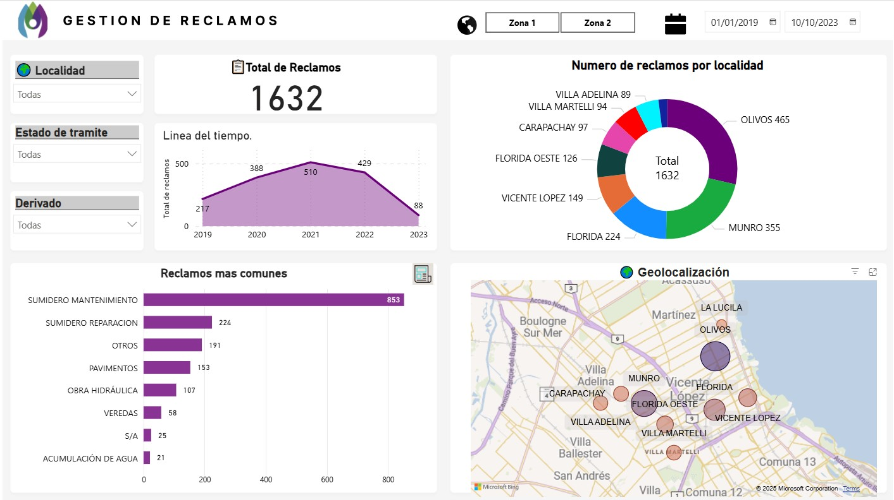
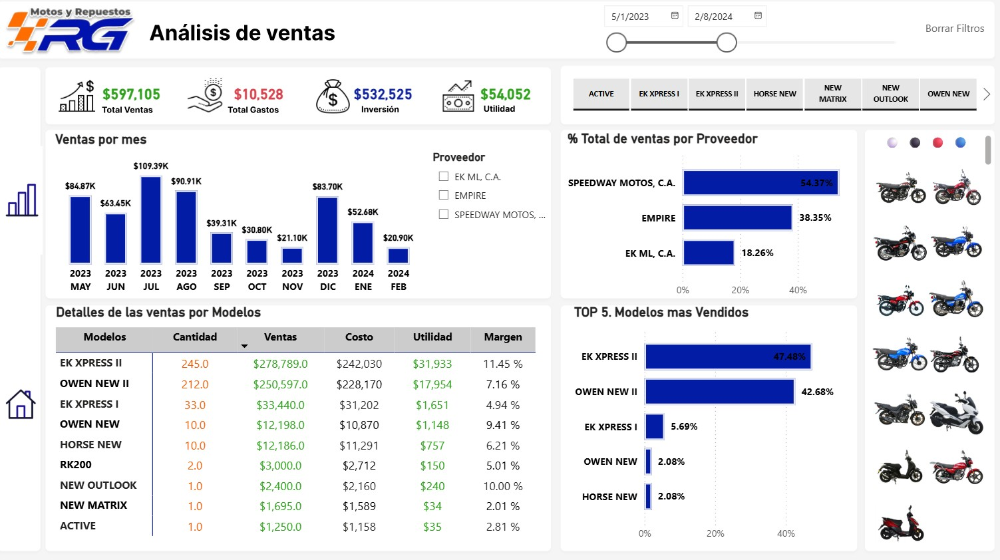
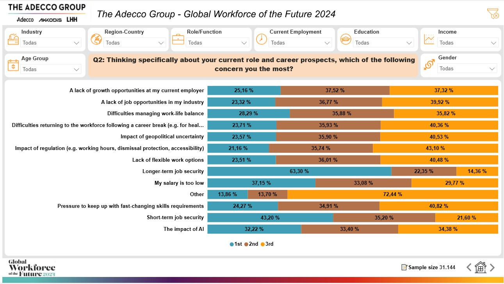

Reporte de seguimiento de solicitudes
Dashboard Power BI para análisis y seguimiento de reclamos ciudadanos vinculados a obras públicas, con visualización por tipo, estado y zona geográfica.

Reporte de Ventas e Inventario
Consolidación de múltiples Excel en un reporte Power BI unificado para análisis de ventas e inventario.
Sistema de Registro en Power Apps
Aplicación Power Apps para registro y gestión de operaciones internas — compras, ventas, artículos, proveedores, sociedades y clientes — con dashboard analítico en Power BI.

Implementación Microsoft Fabric
Implementación completa desde la ingesta hasta el reporte: Dataflows Gen2, OneLake, Semantic Models con RLS/OLS y Deployment Pipelines.

Dashboard Corporativo de Encuestas
Dashboard Power BI construido sobre datos de Google Forms y Excel. Transformación con Power Query y medidas DAX para análisis de respuestas por categoría

UTech Warehouse - Sistema Web
Aplicación web full-stack para gestión de almacén con dashboard interactivo, gestión de inventario en tiempo real y panel administrativo completo.